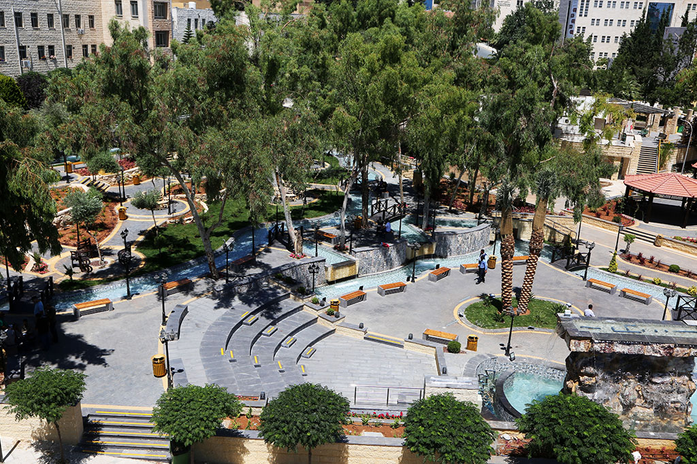
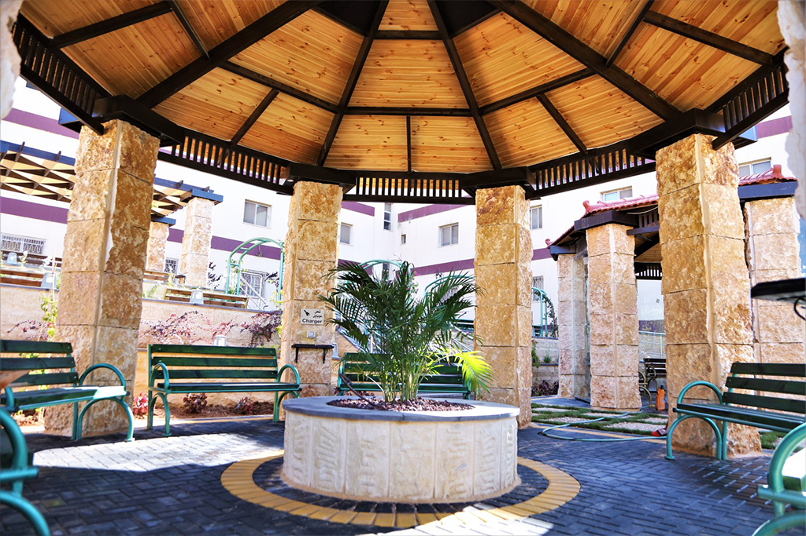
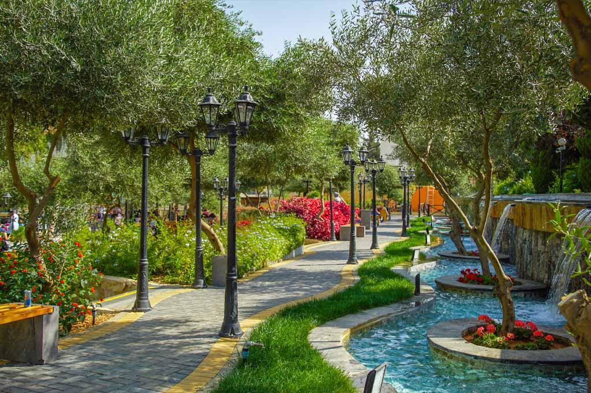
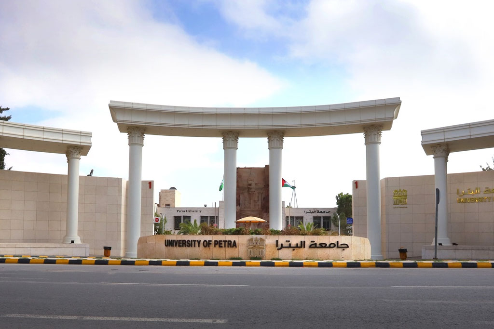
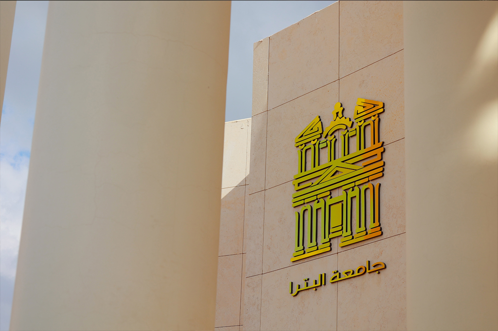
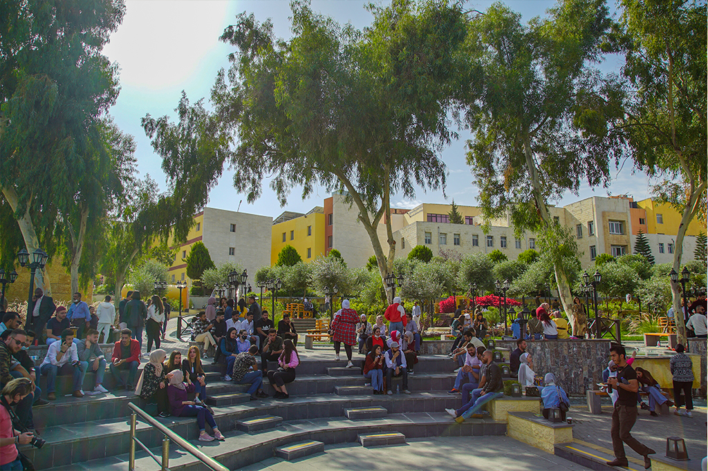
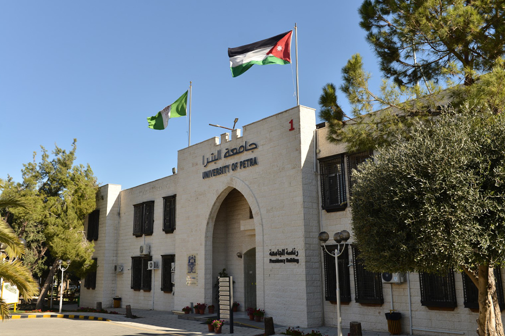
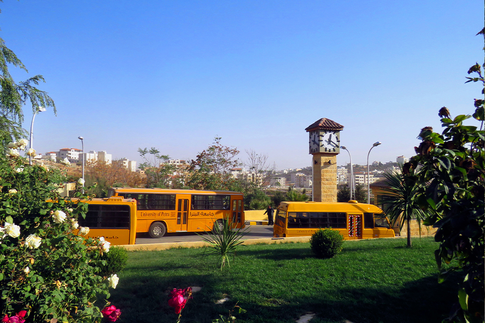

Deanship of Student Affairs
More than just classes
This page explains campus life at University of Petra: student clubs, sports, housing, and the campus grounds. Official materials describe a climate of community, wellbeing, and responsible freedom, with about 41% of the campus as green space and students from 31 countries.













